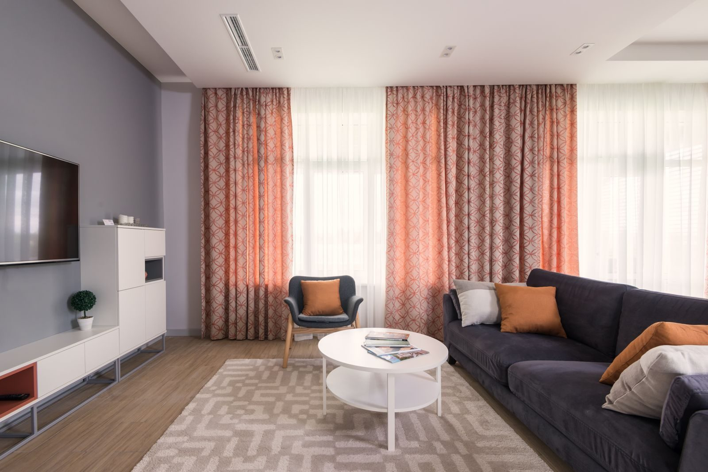
Guide
Quel revêtement de sol souple choisir ?
PVC, LVT, moquette : comparatif des sols souples selon la pièce, l'usage, le budget et l'entretien.
Lire le guide →Sol PVC, lames à clipser, moquette, salle de bain étanche, ragréage, budget… Nous partageons ici l'expérience de nos chantiers à Brest pour vous aider à faire le bon choix et à réussir votre projet de A à Z.

PVC, LVT, moquette : comparatif des sols souples selon la pièce, l'usage, le budget et l'entretien.
Lire le guide →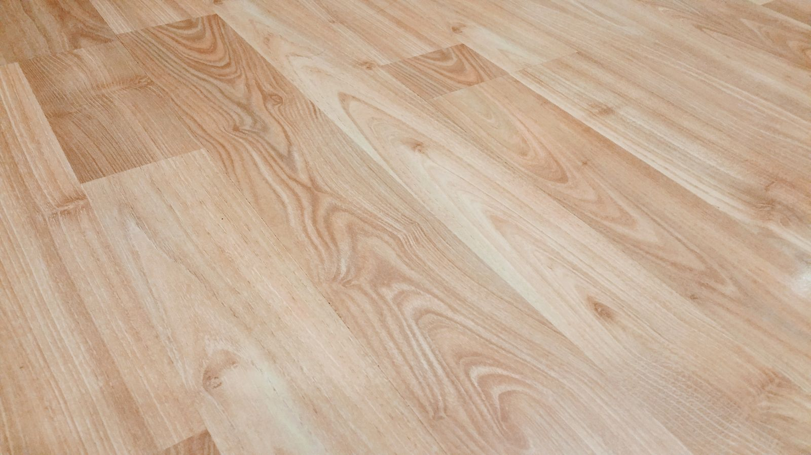
Rouleau collé ou lames clipsables (LVT) : avantages, limites et le meilleur choix selon votre pièce.
Lire le comparatif →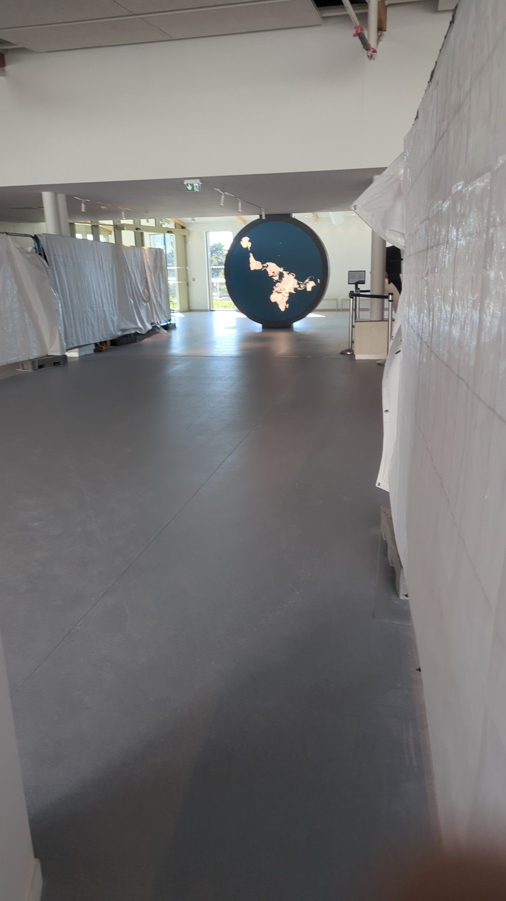
Pourquoi préparer et ragréer le support conditionne la durée de vie et le rendu de votre sol.
Lire l'article →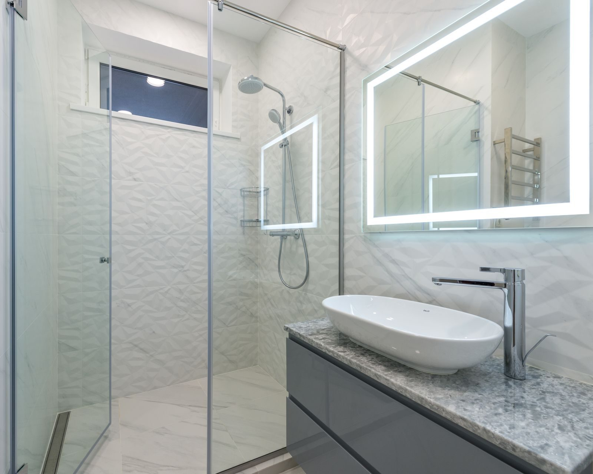
La salle de bain intégrale : sol et murs 100 % étanches, pose rapide et entretien facile.
Lire l'article →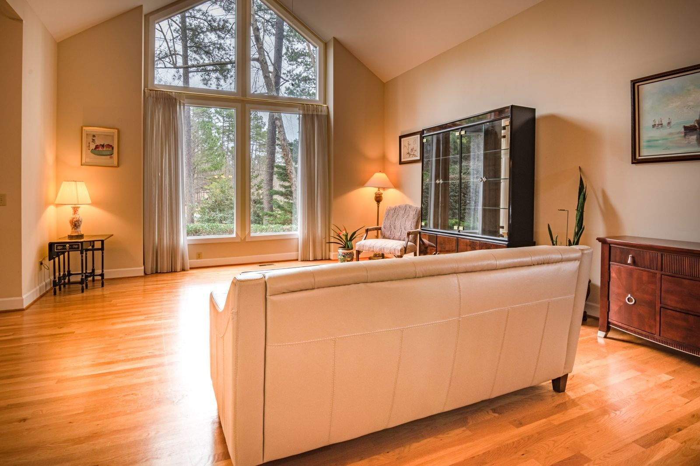
Ce qui fait varier le prix au m² d'un revêtement souple posé, et comment obtenir un devis juste.
Lire l'article →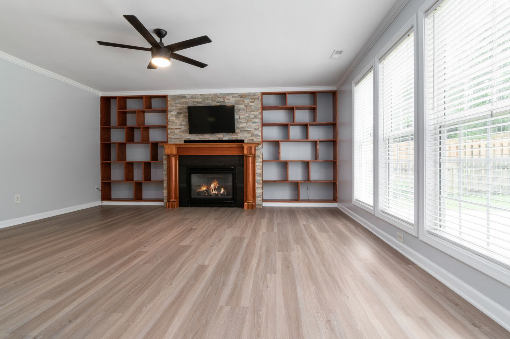
L'avis honnête d'un poseur : tous les atouts du PVC, ses vraies limites et comment les éviter.
Lire l'article →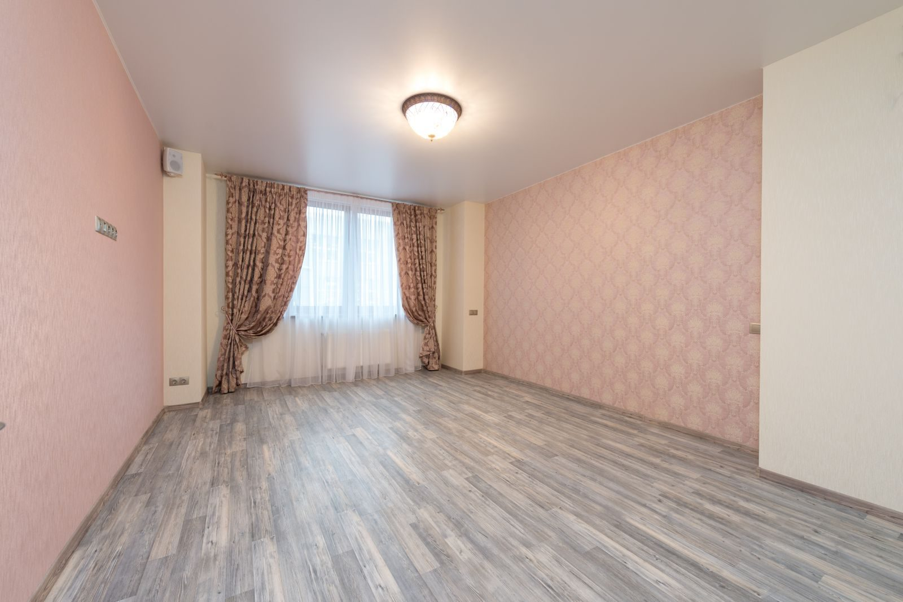
Rénover sans tout casser : sur carrelage, parquet ou ancien sol, ce qui est possible et à quelles conditions.
Lire l'article →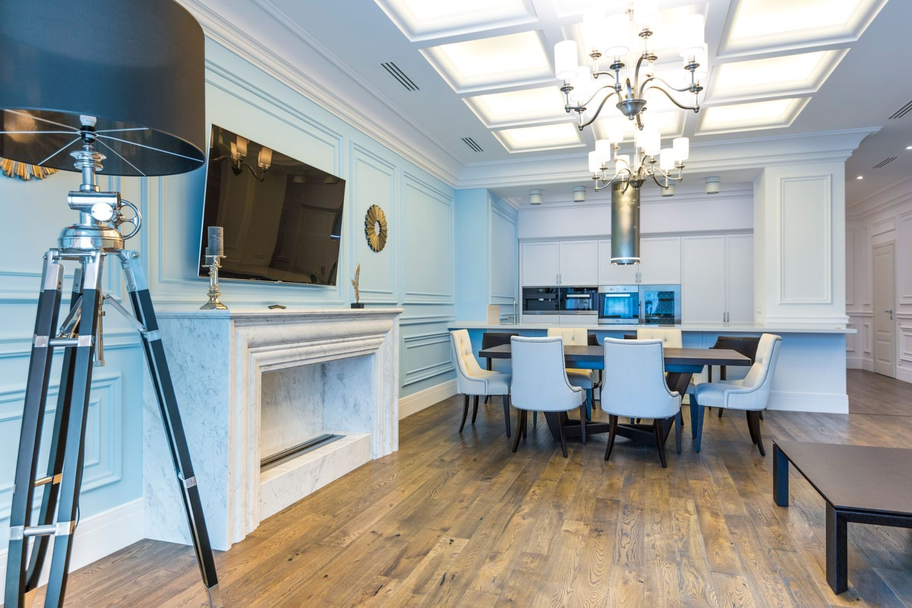
Vinyle et PVC sont le même produit, le lino est tout autre chose : on clarifie pour vous aider à choisir.
Lire l'article →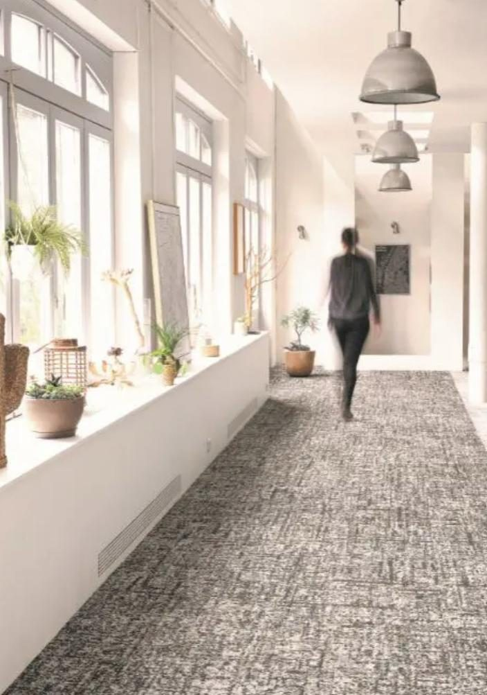
Les bons gestes au quotidien, les produits à éviter et les astuces pour prolonger sa durée de vie.
Lire l'article →Parquet, carrelage ou vieux lino : refaire le sol sans démolition dans un appartement brestois.
Lire l'article →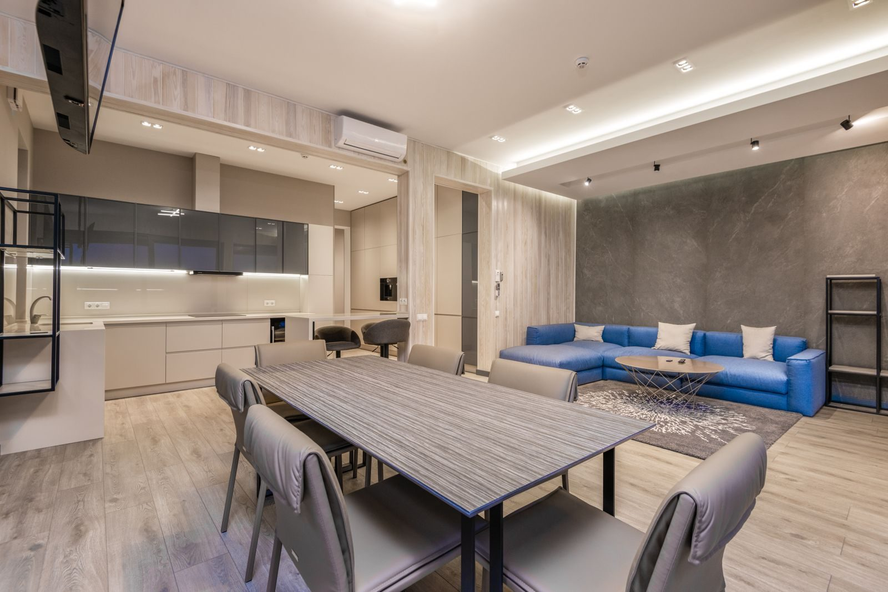
Humidité et air salin à Brest : le revêtement qui tient dans le temps face au climat océanique.
Lire l'article →Passage intense, ménages fréquents, belles photos d'annonce : le sol idéal pour les bailleurs.
Lire l'article →Commerce, bureau, cabinet : un sol résistant, sûr et hygiénique, posé sans stopper l'activité.
Lire l'article →Durée du chantier, quand remarcher, poussière : rester chez soi pendant les travaux, c'est possible.
Lire l'article →Compatible, oui — sous conditions : produit adapté, température limitée, pose collée. On fait le point.
Lire l'article →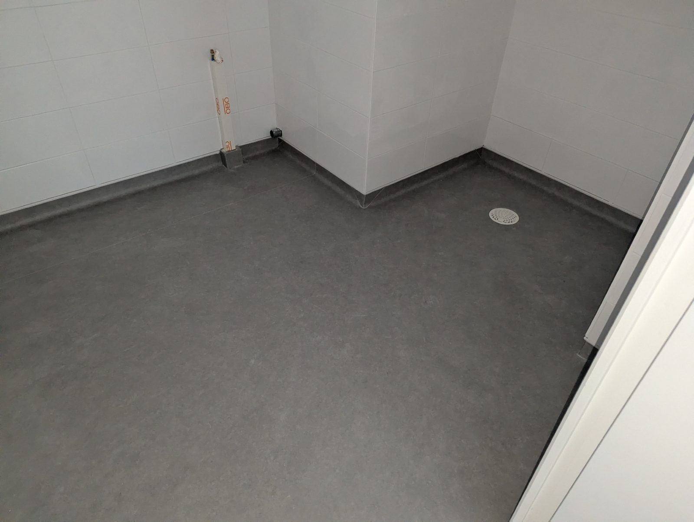
Prévenir les chutes avec un sol sûr et confortable, pour le maintien à domicile et les pièces d'eau.
Lire l'article →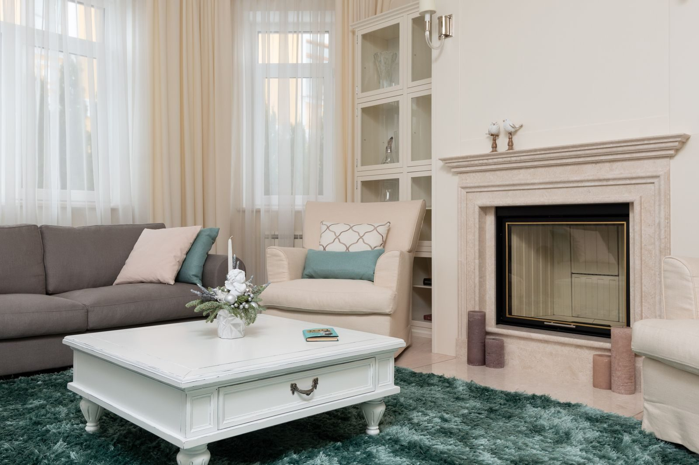
Confort, propreté, air sain : PVC facile à nettoyer ou moquette douillette, comment choisir.
Lire l'article →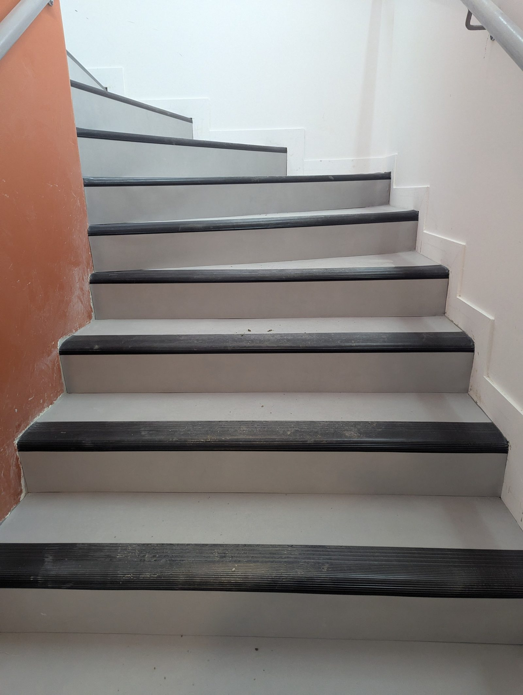
Rénover un escalier sans le remplacer, et le rôle clé du nez de marche pour la sécurité.
Lire l'article →Décrivez-nous votre pièce et votre besoin : nous vous conseillons et vous établissons un devis gratuit.
Demander un devis gratuit